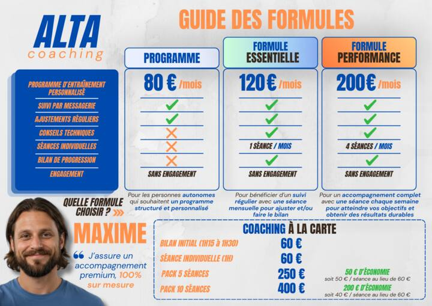

SPORT-SANTÉ
Reprendre ou maintenir une activité physique adaptée, progressive et cohérente avec votre situation.
ALTA — COACHING SPORTIF PERSONNALISÉ
Sport-santé, musculation, running et préparation physique : un accompagnement 100 % personnalisé construit autour de votre niveau, de vos objectifs et de votre quotidien.
01 / L’APPROCHE
Chaque personne possède un niveau, une histoire, des objectifs et des contraintes différentes. Son entraînement doit l’être aussi.
M’écrire ↗02 / COACHING
Reprendre ou maintenir une activité physique adaptée, progressive et cohérente avec votre situation.
Construire force, technique, masse musculaire et autonomie avec un entraînement structuré.
Débuter, reprendre ou progresser avec une programmation adaptée à votre niveau et vos objectifs.
Développer les qualités physiques nécessaires à votre pratique sportive et à vos performances.
VOUS N’AVEZ PAS
À VOUS ADAPTER
À UN PROGRAMME.
LE PROGRAMME
S’ADAPTE À VOUS.
03 / LA MÉTHODE
Comprendre vos objectifs, votre parcours et vos contraintes.
Identifier votre niveau actuel et les priorités.
Créer votre programme sur mesure.
Faire évoluer votre entraînement selon votre progression et vos retours.
04 / POURQUOI ALTA
Pas de programme copié-collé.
L’accompagnement part de votre niveau réel.
Le programme évolue avec votre progression.
Un vrai suivi, des échanges et des ajustements.
Vous savez pourquoi vous faites chaque séance.
Priorité à la régularité et à la progression dans le temps.
05 / LES FORMULES
PROGRAMME
80 € / mois
Sans engagement
Pour les personnes autonomes souhaitant un programme structuré et personnalisé.
FORMULE ESSENTIELLE
120 € / mois
Sans engagement
Pour un suivi régulier avec une séance mensuelle afin d’ajuster le programme et faire le bilan.
FORMULE PERFORMANCE
200 € / mois
Sans engagement
Pour un accompagnement complet avec une séance chaque semaine.
Bilan initial 1h15 à 1h3060 €
Séance individuelle 1h60 €
Pack 5 séances 50 € / séance · 50 € d’économie250 €
Pack 10 séances 40 € / séance · 200 € d’économie400 €

LE COACH
COACH SPORTIF — ALTA COACHING
Mon rôle n’est pas de vous faire entrer dans une méthode toute faite. Il est de construire avec vous une manière de vous entraîner qui corresponde réellement à vos objectifs, votre niveau et votre quotidien.
06 / VOTRE PROJET
Quelques minutes suffisent pour me permettre de mieux comprendre votre profil, vos objectifs, votre niveau et vos attentes.
07 / TÉMOIGNAGES
« Le programme s’est installé naturellement dans mon quotidien. Je me sens accompagnée, sans pression. »
« Les séances et les ajustements m’ont permis de progresser en running de manière beaucoup plus sereine. »
« J’ai gagné en technique et en confiance, avec un cadre clair que je peux suivre seul. »
08 / QUESTIONS
À toute personne souhaitant un accompagnement adapté à son niveau, de la reprise d’activité à un objectif de performance.
Non. Le point de départ est votre situation actuelle et la progression se construit étape par étape.
Oui. Il est construit et ajusté en fonction de vos objectifs, disponibilités, contraintes et retours.
Oui, ces pratiques peuvent être articulées dans une programmation cohérente avec vos priorités.
Oui. La régularité, la progressivité et l’écoute sont alors particulièrement importantes.
Selon la formule, le suivi combine messagerie, ajustements, bilans et séances individuelles.
Le questionnaire ou un premier échange permettent d’identifier l’accompagnement le plus pertinent.
Oui, les trois formules sont sans engagement.
Les modalités sont à définir directement ensemble selon votre projet et vos contraintes.
Vous pouvez utiliser l’agenda ci-dessous dès qu’il est activé, ou envoyer un message via le formulaire.
09 / CONTACT
Vous avez un objectif, une question ou vous ne savez pas encore quelle formule vous correspond ? Échangeons.
10 / PREMIER ÉCHANGE
Réservez directement un créneau pour un premier échange.